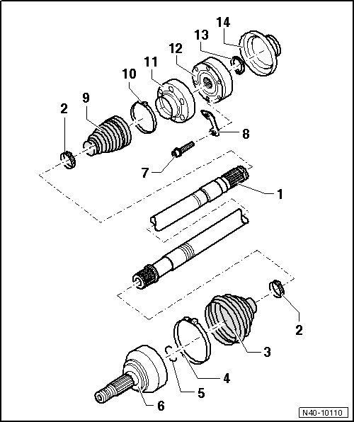

Drive Axle Assembly Overview
Drive Axle Assembly Overview

1 Drive axle
• Removing and installing, refer to --> [ Drive Axle ] Drive Axle.
2 Clamp
• Replace.
3 Outer boot
• Check for tears and scuffing.
• Allocation
4 Clamp
• Replace.
5 Securing ring
• Replace.
• Insert in shaft groove.
6 Outer Constant Velocity (CV) joint
• Replace only as complete unit.
• Installing: Drive onto shaft until seated using plastic hammer.
• Before assembling, coat splines using assembly paste (G 052 109 A2)
• Clean splines on vehicles with bonded drive axle, degrease and apply locking compound (D 154 000 A1) onto splines, refer to --> [ During start of production, there was a change from bonded to non bonded drive axles. If a bonded drive axle is installed in the vehicle, the following three work steps must be performed additionally: ] Drive Axle.
7 Bolt
• M10 x 52.
- 50 Nm + 90° additional turn.
- Always replace after removal.
• M12 x 1.5 x 60.
- 90 Nm + 90° additional turn.
- Always replace after removal.
8 Backing plate
9 Inner boot
• Check for tears and scuffing.
10 Clamp
• Replace.
11 Cover
12 Inner CV joint
• Replace only as complete unit.
• Before removing inner CV joint, remove outer joint first.
13 Securing ring
• Removing and installing using (VW 161 A).
14 Cover
• Always replace after removal.